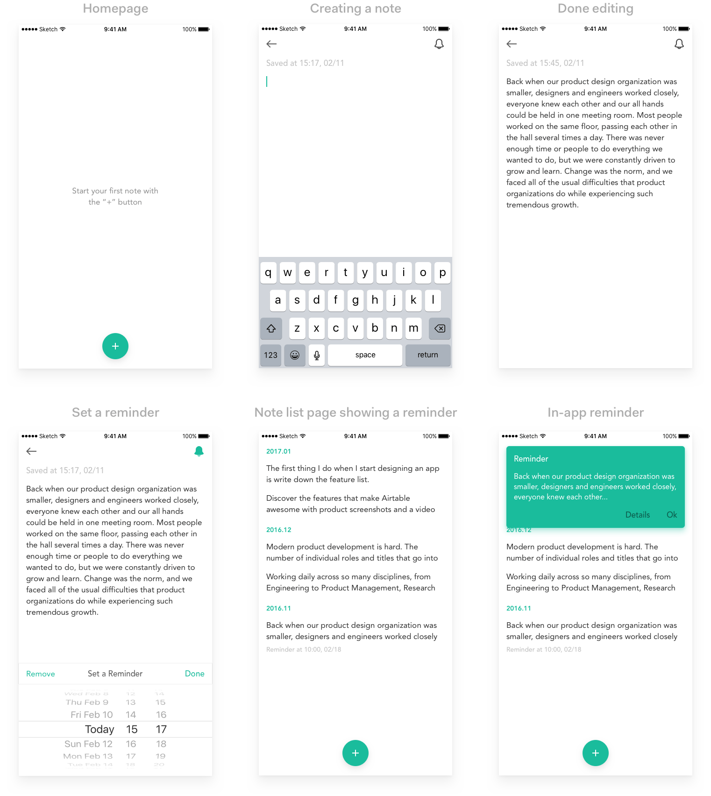

Does it ever occur to you that at times you wanna take a note while you couldn't find a proper app in your phone to do that, even if you may have installed several apps like Evernote, Microsoft OneNote, Google Keep as they are a bit too much to use as note apps. No offense, these apps are great, but the thing is, sometimes all we need is taking notes, that's it. No settings, no account, no folders, no nothing.
The idea
So, here comes Quicknote, an app that simply focuses on taking notes quickly, no muss, no fuss. I came up with this idea and wireframed it really quick, talked it with a friend, and the next day we decided to make it real. BTW, he is both a iOS and Android developer, salute to him. üëè
Firstly, we agreed on that, for version 1.0, it's all about taking note while you can set a reminder to each one of them at the same time. You might need to know when did you take the note, and yeah, we feel you - we've categorized them monthly with the exact time and date it was created displayed inside each note.
We use iCloud to sync between different devices (I know, I know, Android won't be forgetten, promise), and it's auto-saved when you're writing. After it's done, just hit the arrow-back icon and there you go - note saved. You don't need to press another Save button every time you take a note, which is a timesaver and no-accidentally-forgot-to-save-it guarantee, right? üòâ

What's next
For more features, we haven't really thought it through, temporarily we would just concentrate on the taking-notes-quickly-more-than-ever part. As far as I can tell, there probably will be a web app - writing on your desktop, and switch to your mobile phone to pick up where you left off is kinda a standard nowadays, isn't it?
FYI, Quicknote for iOS is now under development and will be out soon, be sure to stay tuned. If you got any interest in giving us some suggestions, feel free to email us, we'd love to hear from you. üòä